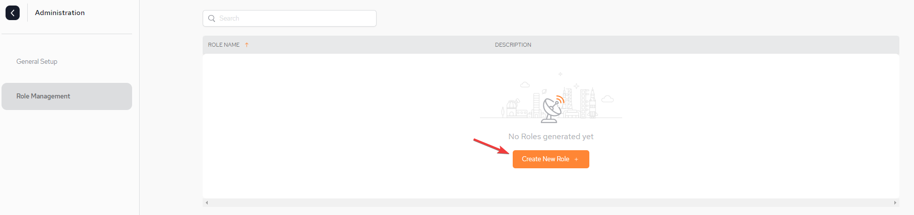
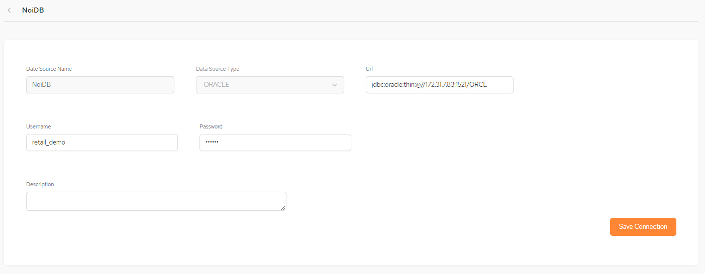

If a user is defined as an Admin, the Administration options can be accessed via the cog at the bottom left hand corner.
.
Once the connection fields are filled in, click Apply.

Provider type – The protocol the IDP supports. Currently
Provider id – This is a generic ID that will be used as a name for the auth-config creator.
Redirect URIs – Upon successful sign-in, this endpoing in our server will receive the data from the IDP,
Issue URL – URL of the IDP issuer. For example, Okta, AWS, Github.
Client Id – Unlike the Provider ID, this ID serves as a unique identifier which the IDP generates to the user so they can identify with it,
Client Secret – This is a secret key that is used with the Client ID in order to improve security.
Authorization Grant Type – Each IDP has rules regarding how roles are grouped. These rules have an arbitrary name provided by the IDP. The roles user must use this name to create the roles.
Enter the connection details and click Apply.
Roles Management configures the....
Create a new role by clicking Create New Role

TBD
The Configuration screen will display:

Date Source Name – the name you define to the data source.
Data Source Type – the database type for the data source, as defined in the System of Record.
URL – the URL for the data source.
Username and Password – the credentials for accessing the data source.
Description – a free-format description of the data source.
Enter the configuration details and click Save Connection, The new data source will be included in the list in the Data Sources screen.